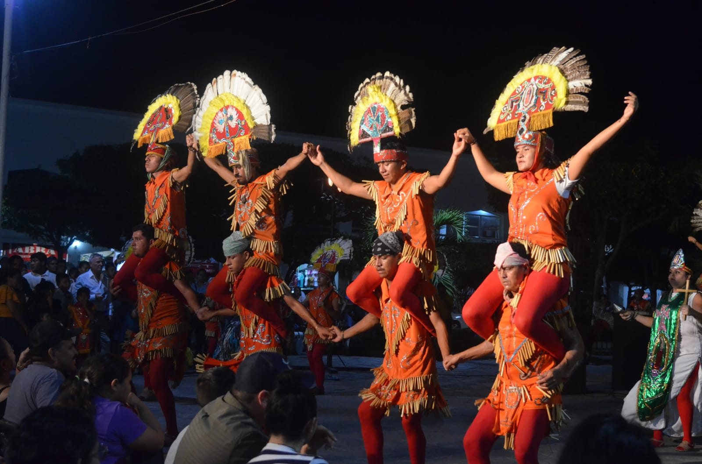

Colima fue habitado por diversas culturas prehispánicas, destacando los nahuas y purépechas. Fue un territorio estratégico debido a su ubicación entre el océano Pacífico y la región montañosa...

Colima es un destino turístico que ofrece una variedad de opciones para todos los gustos. Desde sus hermosas playas en Manzanillo hasta los pintorescos pueblos mágicos como Comala...

La gastronomía de Colima está fuertemente influenciada por sus tradiciones prehispánicas y su acceso a productos frescos del mar. Platos como la torta ahogada y los mariscos frescos son parte esencial de la cultura culinaria...

La gastronomía de Colima está fuertemente influenciada por sus tradiciones prehispánicas y su acceso a productos frescos del mar, platos como la torta ahogada y los mariscos frescos son parte esencial de la cultura culinaria...